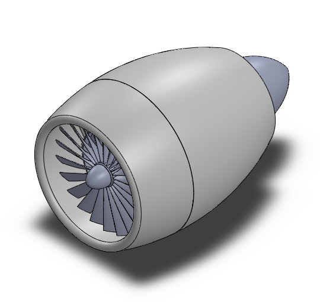
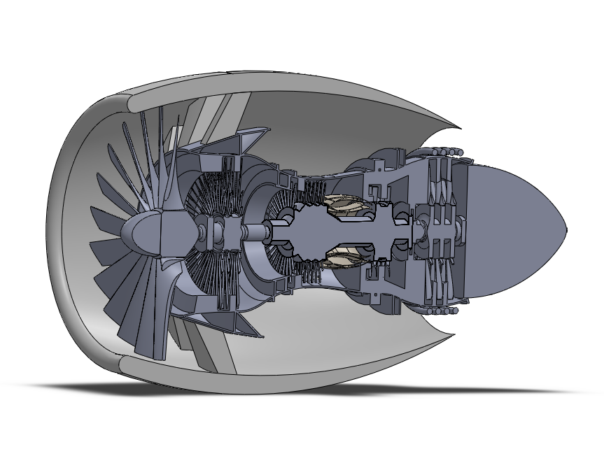

This project involved reverse-engineering and modeling the General Electric GE90-115B, a pinnacle of aerospace engineering. The objective was to create a high-fidelity mechanical assembly that replicates the internal flow path and the iconic "S-shape" composite fan blades, while ensuring all components adhere to realistic structural and aerodynamic constraints.

The GE90 utilizes a dual-spool architecture, which I replicated through a complex system of concentric shafts and rotating stages. This mechanical separation allows the high-pressure and low-pressure sections to operate at their respective optimal rotational speeds, a critical requirement for high-bypass efficiency.

The 22 signature fan blades were modeled using parametric spline equations in SolidWorks to capture the complex sinusoidal twist required for subsonic efficiency. By utilizing advanced surfacing techniques—specifically lofts and boundary surfaces—the geometry transitions seamlessly from the hub to the blade tip, maintaining aerodynamic continuity.
Beyond visual modeling, the project focused on mechanical validation. I designed a functional core flow path featuring a 10-stage high-pressure compressor (HPC), an annular combustion chamber with integrated swirler ports, and multi-stage turbines. Using SolidWorks Simulation, I performed preliminary assessments to ensure the assembly could support the physics of flight:
The entire assembly was managed using Top-Down design principles in SolidWorks. Master skeleton sketches were used to drive global variables, allowing for rapid iteration of stage counts and blade pitches. This structured workflow was essential for maintaining performance across a large assembly and ensuring zero-interference between stationary stators and rotating components.
As a Mechatronics project, emphasis was placed on the "System" view. The design accounts for the integration of sensors (bleed air ports) and mechanical power extraction for the accessory gearbox. The project served as a case study in managing 100+ part hierarchies and utilizing advanced CAD features to simulate real-world aerospace hardware.